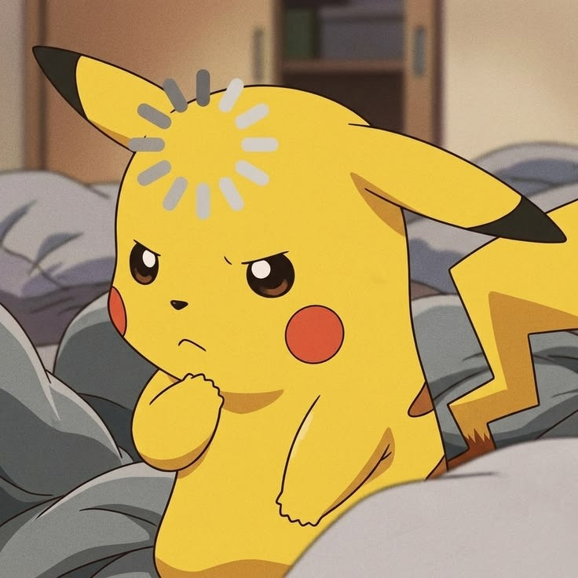
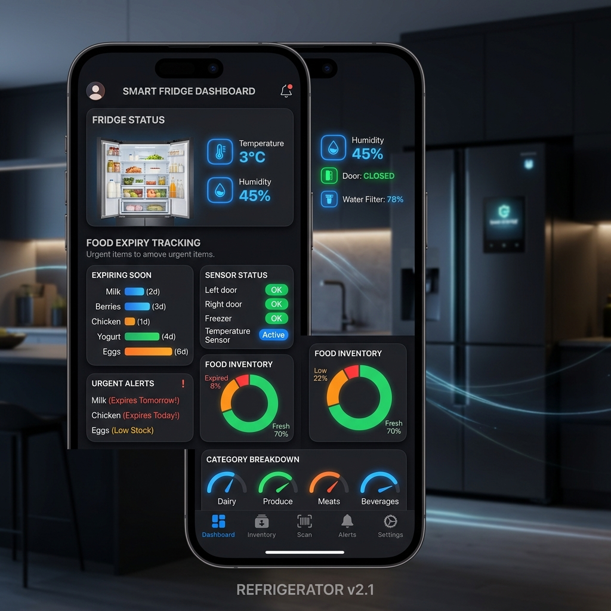

Linux · Open Source
NED-OS
A terminal-first personal Linux environment bringing together system utilities, diagnostics, network controls and desktop customization.
FedoraLinuxShell
I'm a Computer Science and Engineering student at FISAT interested in Linux, open source, web development, machine learning and embedded systems. I enjoy turning practical ideas into working software and hardware projects.

I am a Computer Science and Engineering student at FISAT. I enjoy building software and hardware projects, exploring Linux systems, and learning how applications work from the command line to the user interface.
My current interests include Linux and open source, web development, computer networks, machine learning, IoT and embedded systems. I learn best by building, testing and improving practical projects.
"Aspiring Software Engineer and IoT Developer with a strong interest in Cybersecurity and Artificial Intelligence. Passionate about building innovative solutions that bridge hardware and software while continuously learning emerging technologies."
Affiliated with APJ Abdul Kalam Technological University (KTU), Kerala
A terminal-first personal Linux environment bringing together system utilities, diagnostics, network controls and desktop customization.
A text-classification project using TF-IDF features and a Linear Support Vector Classifier to identify spam messages.

A web application for recording food items, tracking expiry dates and quantities, and managing fridge inventory.
Hands-on experience customizing and maintaining Linux environments, with Fedora as my primary desktop system:
Exploring practical hardware-software projects and microcontroller development:
Building core computer science and systems knowledge through coursework and practical labs:
Appointed as a Technical Team Member of the FFSC Tech Team. Selected for the FOSS 2026 EXE-COM Tech Team, contributing to event forms and technical coordination.
Volunteered with the Electrify robotics workshop team, assisting with workshop setup and arrangements, and supported the event Media Team.
Worked on the Smart Expiry Tracker project, an early embedded-systems project that helped spark my interest in Linux, hardware development and NED-OS.
Volunteered at a national-level 24-hour electronics hackathon organized by IEEE FISAT SB in collaboration with IDEA Lab, FISAT.
Feel free to reach out for project inquiries, technical discussions, or internship opportunities.
For project discussions, collaboration or internship opportunities, contact me through LinkedIn.
Message me on LinkedIn View GitHub